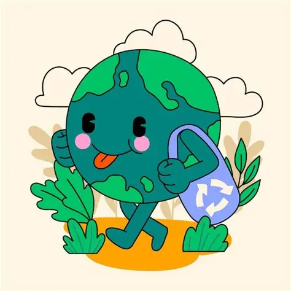

학교 분리배출 AI 프로젝트
Eco-Check
Eco-Check
AI
페트병·캔의 분리배출 상태를 사진으로 확인해 보는 AI 체험입니다.

우리가 해결하려는 문제
교실 및 복도 분리수거함에 라벨이 붙어 있거나 음료·이물질이 남은 채 버려진 용기가 많아 악취가 발생하고 재활용이 어려워지는 문제를 해결하고자 했습니다.
교실·복도의 분리수거 문제
올바른 분리배출을 돕는 AI
직접 시험해 보세요
카메라 또는 사진을 이용해 모델의 판단을 확인해 보세요.
모델 준비 중
입력 방법
카메라를 시작하거나 이미지를 선택하면
이곳에 입력 화면이 표시됩니다.
예측 결과
모든 클래스의 확률
현재 가장 높은 예측
아직 예측하지 않았습니다
--%
♻
모델이 구분하는 실제 클래스
모델의 metadata에서 실제 클래스 이름을 자동으로 불러옵니다.
모델 로딩 중...
AI 결과는 사람이 다시 확인해 주세요
- 이 모델은 사진을 보고 판단하기 때문에 모든 부분을 꼼꼼하게 확인하지 않을 수 있습니다.
- 플라스틱 병의 생김새에 따라 잘못된 예측이 나올 수 있습니다.
사람이 꼭 확인할 부분
빨대, 휴지 등 다른 쓰레기가 꽂혀 있거나
심하게 오염되어 분리배출이 불가능한 상태는
모델이 제대로 분별하지 못할 수 있습니다.
이런 경우에는 사람이 직접 확인해야 합니다.
PROJECT TEAM
팀명
집가고싶다
팀원
임채린 · 전민서